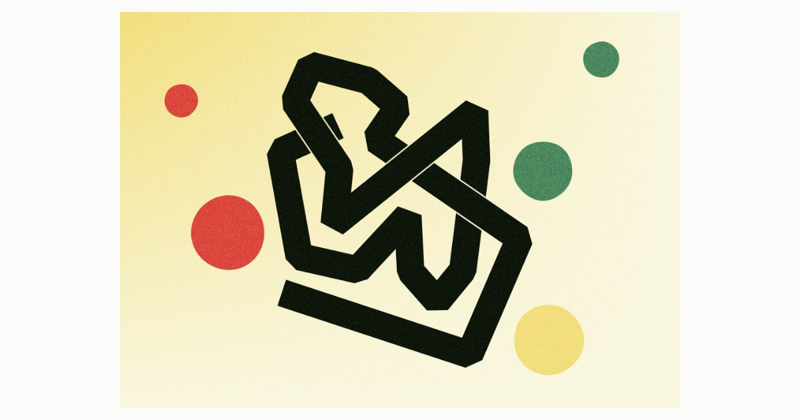

One continuous ribbon crosses the frame again and again; coming back in, it meets what it already wrote. Depth is not the order of drawing: it is settled crossing by crossing, over and under in turn, the way a knot diagram is read. What parts the strands is not an outline but an incision — the cut where the ground shows through.
Una cinta continua cruza el marco una y otra vez; al volver a entrar, se encuentra con lo que ya escribió. La profundidad no es el orden del dibujo: se decide cruce a cruce, encima y debajo por turnos, como se lee un diagrama de nudos. Lo que separa las hebras no es un contorno sino una incisión — el corte por donde se ve el suelo.
Zinta jarraitu batek behin eta berriz zeharkatzen du markoa; berriro sartzean, dagoeneko idatzitakoarekin egiten du topo. Sakonera ez da marrazketaren ordena: gurutzagunez gurutzagune erabakitzen da, gainetik eta azpitik txandaka, korapilo-diagrama bat irakurtzen den bezala. Hariak banatzen dituena ez da ingerada bat, ebakidura bat baizik — lurra ikusten den ebakia.
Over and under are not two layers: they alternate as the line is walked. Every crossing is passed twice, and the second pass says the opposite of the first.